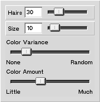

|
|
Hairy Brush -tool
The hairy brush -tool creates a brush stroke by simulating the motions of individual hairs of a brush. The tool is used by clicking on the image and moving the mouse around to produce a free-hand line. When the mouse is moved faster the produced line is thinner than when the mouse is moved slowly.
Settings
Figure 1 shows the contents of the tool-setup-window when it is displaying the setup for hairy brush -tool.
Figure 1: Setup view for the hairy brush -tool.
| 
|
- Hairs
- This controls how many hairs the brush has.
- Size
- This controls how wide the brush is. The width is measured in pixels.
- Color Variance
- This controls how uniform the colors will be among the hairs. If the slider is on the left all of the hairs will have the same color. When the slider is moved towards right the hairs will have their colors modified a little bit to produce more lively stroke.
- Color Amount
- This controls how much color the brush contains. When the brush is moved it will lose some of the color and eventually run out of the color. This simulates the drying of a real brush.
|